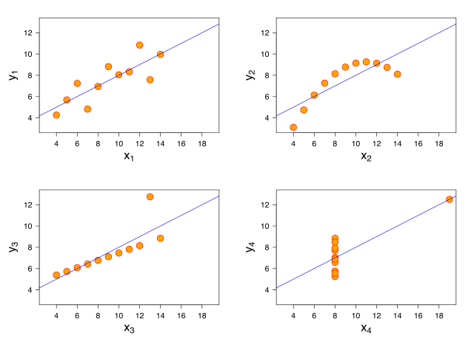
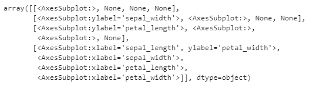
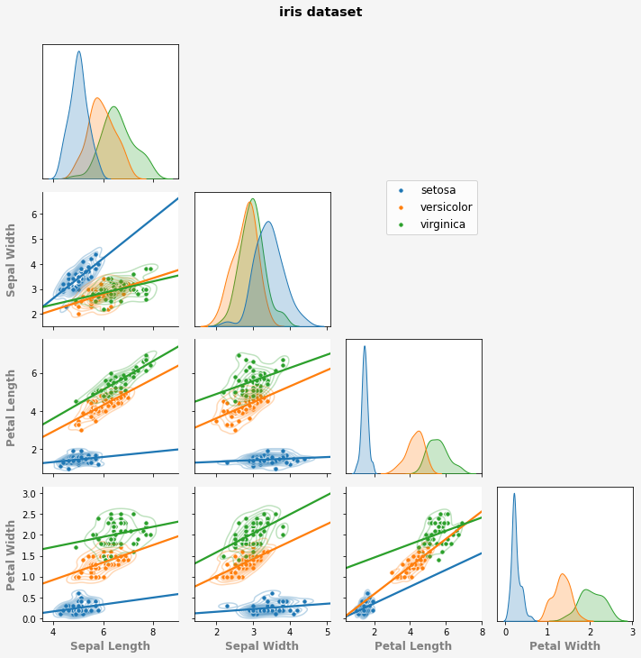

4. seaborn figure-level 다듬기
- seaborn + matplotlib 마지막 시간입니다.
figure-level그림을 그리고 다듬어 봅니다.- 자체적으로 지원하는 명령어를 사용해보고,
- 개흉 심장마사지 방법을 알아보겠습니다.
4.1. figure-level으로 편리하게 그리기: pairplot()
wikipedia: Exploratory data analysis
wikipedia: Anscombe’s quartet
autodesk: datasaurus
seaborn.pairplot
- EDA에서 피할 수 없는 과정이 상관도입니다.
- 두 변수 사이의 관계를 그려 관계를 파악합니다.
- 대개 산점도
scatter plot나 밀도 함수density plot를 쓰고, - 추세선
regression을 덧붙이는 경우도 있습니다.
- 데이터 분포는 통계값으로만 확인하면 안됩니다.
- 평균과 표준편차는 같은데 분포는 다른 경우가 많습니다.
- 반드시 분포를 그려 봐야 합니다.
- Anscombe’s quartet이 아주 좋은 예시입니다.

- N개의 인자 사이에는 $ \frac{N(N-1)}{2} $가지 관계가 있습니다.
- seaborn의
pairplot()은 여러 인자 사이의 수많은 상관도를 쉽게 그려줍니다.
붓꽃
iris데이터셋으로 상관도를 그려봅니다.- 꽃받침
sepal과 꽃잎petal, - 길이
length와 폭width네 가지 인자로부터 - 여섯 가지의 상관도,
- 네 가지의 히스토그램이 나옵니다.
- 꽃받침
코드 한 줄로 그려봅시다.
1
2
3import seaborn as sns
iris = sns.load_dataset("iris")
- 종
species별 분포를 그려봅니다.1
g = sns.pairplot(iris, hue="species")
hue=라는 인자 하나만 추가했을 뿐입니다.- 그림이 갑자기 예뻐졌습니다.
- 히스토그램도 밀도함수로 바뀌어서 훨씬 보기 좋습니다.
- 여기에 다른 그림을 겹쳐보겠습니다.
- 대각선 위 : 2차원 밀도함수 + 추세선
- 대각선 아래 : 2차원 밀도함수 + 산포도
- seaborn
figure-level기능만으로 가능합니다. .map_lower()와.map_upper를 사용합니다.1
2
3g = sns.pairplot(iris, hue="species", kind="kde", plot_kws={"alpha":0.3})
g.map_lower(sns.scatterplot)
g.map_upper(sns.regplot, scatter=False, truncate=False, ci=False)
map_lower()와map_upper()는 대각선의 위와 아래에 그림을 덧씌우는map함수입니다.- 앞서 완성한 pairplot에 새로운 그림을 덧붙입니다.
- 인자로는 함수 이름과 이 함수의 옵션들을 연달아 넣어 줍니다.
- 함수에 맞는 인자를 넣어줘야 합니다.
4.2. figure-level 그림 뼈대부터 세우기: PairGrid()
pairplot을 단계별로 그리는 방법입니다.
- 코드 양은
pairplot()한 줄보다 늘어납니다. - 그러나 자유도가 늘어납니다.
- 코드 양은
.pairplot()으로는 위 아래를 완전히 다르게 할 수 없습니다.대각선의 아래엔 산점도와 추세선을 그리고
대각선 위에는 밀도함수만 그려보겠습니다.
1
2
3
4
5
6
7
8
9
10
11
12
13
14
15# 틀 만들기
g = sns.PairGrid(iris, hue="species", diag_sharey=False)
# diagonal
g.map_diag(sns.kdeplot, fill=True)
# lower
g.map_lower(plt.scatter, s=30, edgecolor="w")
g.map_lower(sns.regplot, scatter=False, truncate=False, ci=False)
# upper
g.map_upper(sns.kdeplot, alpha=0.3)
# legend
g.add_legend()
.pairplot()과 같은 형식의 그림이 나왔습니다.- 내 의도를 더 잘 반영할 수 있게 되었습니다.
- 8번째 줄에는
plt.scatter가 들어가 있습니다. .pairplot()도 마찬가지지만.map()에는 seaborn대신 matplotlib 함수를 사용할 수 있습니다.
- 중복되는 오른쪽 윗부분을 생략할 수 있습니다.
corner=True를 넣어줍니다.1
2
3
4
5
6
7
8
9
10
11
12g = sns.PairGrid(iris, hue="species", diag_sharey=False, corner=True)
# diagonal
g.map_diag(sns.kdeplot, fill=True)
# lower
g.map_lower(plt.scatter, s=30, edgecolor="w")
g.map_lower(sns.regplot, scatter=False, truncate=False, ci=False)
g.map_lower(sns.kdeplot, alpha=0.3)
# legend
g.add_legend()
- 이제 작은 수정을 해봅니다.
- 대각선에 사각 테두리 치기
- 범례를 그림 안으로 가져오기
- 가슴을 열고 심장마사지를 할 시간입니다.
4.3. figure-level 그림 객체 접근
seaborn.FacetGrid
matplotlib.figure.Figure
matplotlib.axes.Axes
4.3.1. axes: .axes
- 이전 글에서
axes를 이용해 jointplot을 재현했습니다. - axes 객체는
.axes를 이용해 접근 가능합니다.1
g.axes
- 확인 결과
AxesSubplot의 array입니다.
4.3.1.1. 특정 axes 윤곽선 그리기
- 정체를 알았으니
axes[i][j]로 접근할 수 있습니다. g.axes[i][j]의 spine을 보이게 합니다.1
2
3
4
5
6
7
8
9
10
11
12
13
14
15
16g = sns.PairGrid(iris, hue="species", diag_sharey=False, corner=True)
# diagonal
g.map_diag(sns.kdeplot, fill=True)
for i in range(4):
g.axes[i][i].spines["left"].set_visible(True)
g.axes[i][i].spines["top"].set_visible(True)
g.axes[i][i].spines["right"].set_visible(True)
# lower
g.map_lower(plt.scatter, s=30, edgecolor="w")
g.map_lower(sns.regplot, scatter=False, truncate=False, ci=False)
g.map_lower(sns.kdeplot, alpha=0.3)
# legend
g.add_legend()
4.3.1.2. 범례 조정
seaborn axisgrid.py 소스코드
matplotlib.axes.Axes.get_legend_handles_labels
matplotlib.axes.Axes.legend
- legend 정보를 가져와서 legend로 삽입합니다.
- 대개 legend에 필요한 handles와 labels는
.get_legend_handles_labels()로 가져옵니다. - 하지만 seaborn
figure-level그림엔 이 명령이 통하지 않습니다. - private처럼 보이는
._legend_data를 사용합니다. - 공식 문서에 없습니다. 소스 코드를 뒤적여야 합니다.
- 대개 legend에 필요한 handles와 labels는
._legend_data정체를 확인합니다.- 범례가
dict형식으로 들어 있습니다.1
g._legend_data
- 아래 코드를 추가하여 범례를 이동합니다.
1
2
3
4
5
6
7
8handles = g._legend_data.values()
labels = g._legend_data.keys()
# axes[1][0] 기준으로 오른쪽 멀리 범례 삽입
g.axes[1][0].legend(handles=handles, labels=labels,
bbox_to_anchor=(3.45, 1),
fontsize="large", frameon=False
)
- 이런 방식으로 특정 axes만 제어할 수 있습니다.
- 원하는 그림, 글자을 넣을 수 있고
- 특정 데이터의 색상을 변경할 수 있습니다.
4.3.2. figure: .fig
- 개별 공간은 axes로 제어하지만
- 여러 axes가 연관된 공간은 figure로 제어합니다.
- figure 객체는
.fig를 이용해 접근 가능합니다.1
type(g.fig)
type()으로 감싸주지 않으면 그림이 통으로 출력됩니다.
4.3.2.1. ylabel alignment
matplolib.figure.Figure #align_ylabels
matplotlib Align y-labels
- 위 그림에서 ylabel 줄이 잘 맞지 않습니다.
- 맨 왼쪽 아래 axes[3][0]의 label이 비죽 나왔네요.
- 다른 ylabel을 움직여서 열을 맞춰 봅시다.
- 위 그림 코드의 맨 마지막 줄에 한 줄만 추가합니다.
1
g.fig.align_ylabels(g.axes[:,0])
4.3.2.2. 범례 조정
- 범례는 figure 기준으로도 삽입 가능합니다.
- 아래 코드는 위의
axes[1][0].legend()와 동일합니다. - 전체적인 그림의 위치를 잡을 수 있어 더 좋습니다.
1
2
3g.fig.legend(handles=handles, labels=labels,
bbox_to_anchor=(0.75, 0.75),
fontsize="large")
4.3.2.3. suptitle
- 그림 전체에 제목을 붙일 수 있습니다.
1
2
3
4g.fig.suptitle("iris dataset", y=1.01,
weight="bold", fontsize="x-large"
)
g.fig.tight_layout()
4.3.2.4. facecolor, edgecolor
- 그림 바탕색을 칠합니다.
1
g.fig.set_facecolor("whitesmoke")
4.3.3. 최종
- x, ylabel까지 정리하면 이렇습니다.
1
2
3
4
5
6
7
8
9
10
11
12
13
14
15
16
17
18
19
20
21
22
23
24
25
26
27
28
29
30
31
32
33
34
35
36
37
38
39g = sns.PairGrid(iris, hue="species", diag_sharey=False, corner=True)
# diagonal
g.map_diag(sns.kdeplot, fill=True)
for i in range(4):
g.axes[i][i].spines["left"].set_visible(True)
g.axes[i][i].spines["top"].set_visible(True)
g.axes[i][i].spines["right"].set_visible(True)
# lower
g.map_lower(plt.scatter, s=30, edgecolor="w")
g.map_lower(sns.regplot, scatter=False, truncate=False, ci=False)
g.map_lower(sns.kdeplot, alpha=0.3)
# legend
handles = g._legend_data.values()
labels = g._legend_data.keys()
g.fig.legend(handles=handles, labels=labels,
bbox_to_anchor=(0.75, 0.75),
fontsize="large")
# x, y labels
labels = ["Sepal Length", "Sepal Width", "Petal Length", "Petal Width"]
font_labels = {"fontsize":"large", "color":"gray", "fontweight":"bold"}
for i in range(4):
g.axes[3, i].set_xlabel(labels[i], fontdict=font_labels)
g.axes[i, 0].set_ylabel(labels[i], fontdict=font_labels)
# ylabel alignment
g.fig.align_ylabels(g.axes[:,0])
# suptitle
g.fig.suptitle("iris dataset", y=1.01,
weight="bold", fontsize="x-large"
)
g.fig.tight_layout()
# facecolor
g.fig.set_facecolor("whitesmoke")
5. 결론
- 네 편의 글에 걸쳐 matplotlib + seaborn 연계기를 정리했습니다.
- 개별적인 코드와 기술보다는 본질에 집중합시다.
- figure와 axes를 통하면 웬만한건 다 된다는 겁니다.
- 0.11에서 seaborn의 공식문서가 대폭 정리됐습니다.
- 하지만 아직 부족한 점이 많습니다.
- 특히 많은 경우 matplotlib에 숙달되었다고 전제합니다.
- 일단 matplotlib부터 제대로 익혀봅시다.